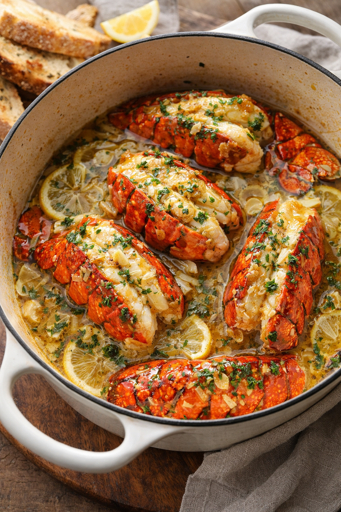

GARLIC BUTTER LOBSTER

Ingredients
GARLIC BUTTER LOBSTER:
- lobster tails (5-6 oz each)
- ½ cup unsalted butter, melted
- 3-4 garlic cloves, minced
- 2 tbsp fresh parsley, chopped
- 1 tbsp lemon juice
- ½ tsp paprika
- Salt and black pepper to taste
- Lemon wedges for serving
Steps:
Prepare lobster tail.
Make gralic butter souce.
Preheat and Season .
Broil Lobster.
Serve the dish.
Yummy! 😋